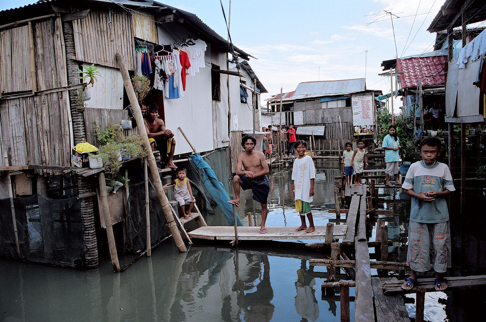
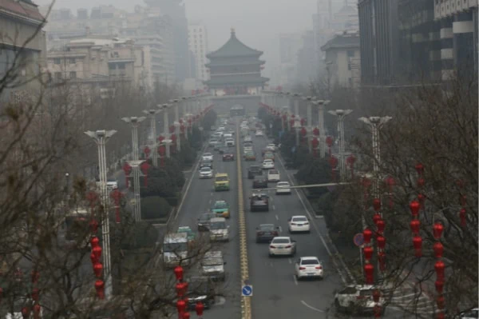

Sustainble Development Goal #11 focuses on "Making cities and human settlements includisve, safe, resilient, and sustainable".
Currently in the world, there are at least 1 billion people living in the slums.
Conditions in these slums are terrible and the picture below shows how terrible these conditions are.

Picture showing the condition of these slums.
These slums are a big concern for the UN as most of these people do not have access to proper sanitary facilities and live in flimsy houses built on disgusting water.
The UN plans on working to provide the necessary resources for countries who has big slum problems to be able to build proper housing and give these people much better living conditions.
The problem of creating sustainable communities is not only in slums and problems such as air pollution is a big concern in major cities.
99% of the world's urban population brethe in polluted air. On top of air pollution, globally, only 82% municpal solid waste is collected and only 55% is managed in controlled facilities.
This means that the remainder of the percentage is not collected and is floating around in our communities where they should not be.
These are all examples of the problems that need to be addressed and the UN is proposing targets to be able to meet these problems.

Picture showing the air pollution in Xi'an China.
THE-UN's-10-GOALS:
1. By 2030, ensure access for all to adequate, safe and affordable housing and basic services and upgrade slums.
2. By 2030, provide access to safe, affordable, accessible and sustainable transport systems for all, improving road safety, notably by expanding public transport,
with special attention to the needs of those in vulnerable situations, women, children, persons with disabilities and older persons.
3. By 2030, enhance inclusive and sustainable urbanization and capacity for participatory, integrated and sustainable human settlement planning and management in all countries.
4. Strengthen efforts to protect and safeguard the world’s cultural and natural heritage.
5. By 2030, significantly reduce the number of deaths and the number of people affected and substantially decrease the direct economic losses relative to global gross
domestic product caused by disasters, including water-related disasters, with a focus on protecting the poor and people in vulnerable situations
6. By 2030, reduce the adverse per capita environmental impact of cities, including by paying special attention to air quality and municipal and other waste management.
7. By 2030, provide universal access to safe, inclusive and accessible, green and public spaces, in particular for women and children, older persons and persons with disabilities.
8. Support positive economic, social and environmental links between urban, peri-urban and rural areas by strengthening national and regional development planning.
9. By 2020, substantially increase the number of cities and human settlements adopting and implementing integrated policies and plans towards inclusion, resource efficiency,
mitigation and adaptation to climate change, resilience to disasters, and develop and implement, in line with the Sendai Framework for Disaster Risk Reduction 2015-2030,
holistic disaster risk management at all levels.
10. Support least developed countries, including through financial and technical assistance, in building sustainable and resilient buildings utilizing local materials.
HOW-THE-UN-IS-MEETING-THESE-GOALS:
1. The UN puts emphasis on implmenting effective urban planning and design to create sustainable cities and communitites.
This includes incorporating princible of sustainability and longevitiy into urban planning.
2. Creating affordable slum upgrading. Creating enough afforadable homes is a major target for UNSDG 11 and the
UN recognizes that bringing people out of theses slums would be a major step in the right direction.
3. Creating sustainable transportation. The UN believes that enhancing public transportation systems and promoting sustainble options will lower our carbon footpring.
The UN encourages the development of sustainable transportation options.
4. SDG calls for environmental design to mitigate the environmental impact developemnt has on the environment. This includes accounting for the placement of parks, and planting of trees.
5. Finally, the UN wants developers to consider longevitiy when building, as they want to create sustainable options which will be around for a long time.
With all of these targets and proposed solutions, it is now up to us and the governments around the world to come together and innovate and implement sustainable options.
If you want to learn more, visit this link https://sdgs.un.org/goals/goal11 to find out more.